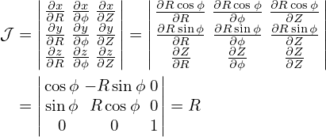

Consider a general coordinate system (ψ,𝜃,ζ). I deï¬ne the metric tensor as the transformation matrix between the covariant basis vectors and the contravariant ones. Equations (87) and (88) express the relation between the two sets of basis vectors using cross product. Next, let us express the relation in matrix from. To obtain the metric matrix, we write the contrariant basis vectors in terms of the covariant ones, such as
|
| (115) |
Taking the scalar product respectively with ∇ψ, ∇𝜃, and ∇ζ, Eq. (115) is written as
|
| (116) |
|
| (117) |
 | (118) |
Similarly, we write
 | (119) |
Taking the scalar product with ∇ψ, ∇𝜃, and ∇ζ, respectively, the above becomes
 | (120) |
 | (121) |
 | (122) |
The same situation applies for the ∇ζ basis vector,
 | (123) |
Taking the scalar product with ∇ψ, ∇𝜃, and ∇ζ, respectively, the above equation becomes
 | (124) |
 | (125) |
 | (126) |
Summarizing the above results in matrix form, we obtain
|
| (127) |
Similarly, to convert contravariant basis vector to covariant one, we write
 | (128) |
Taking the scalar product respectively with ∇𜃠×∇ζ𒥠, ∇ζ ×∇ψ𒥠, and ∇ψ ×∇ğœƒğ’¥ , the above equation becomes
 | (129) |
|
| (130) |
 | (131) |
For the second contravariant basis vector
 | (132) |
 | (133) |
 | (134) |
|
| (135) |
For the third contravariant basis vector
 | (136) |
 | (137) |
 | (138) |
|
| (139) |
Summarizing these results, we obtain
 | (140) |
where
M =  , ,
|
This matrix and the matrix in Eqs. (127) should be the inverse of each other. It is ready to prove this by directly calculating the product of the two matrix.
Suppose that (ψ,𝜃,ϕ) are arbitrary general coordinates except that ϕ is the usual toroidal angle in
cylindrical coordinates. Then ∇ϕ = 1∕R is perpendicular to both ∇ψ and ∇𝜃. Using this, Eq. (127) is
simplified to
is perpendicular to both ∇ψ and ∇𝜃. Using this, Eq. (127) is
simplified to
|
| (141) |
Similarly, Eq. (140) is simpliï¬ed to
 | (142) |
[Note that the matrix in Eqs. (141) and (142) should be the inverse of each other. The product of the two matrix,
 | (143) |
can be calculated to give
| , |
where
| A = |∇𝜃|2|∇ψ|2𝒥2∕R2 − (∇𜃠⋅∇ψ)2𝒥2. |
By using the deï¬nition of the Jacobian in Eq. (77), it is easy to verify that A = 1, i.e.,
 | (144) |
]